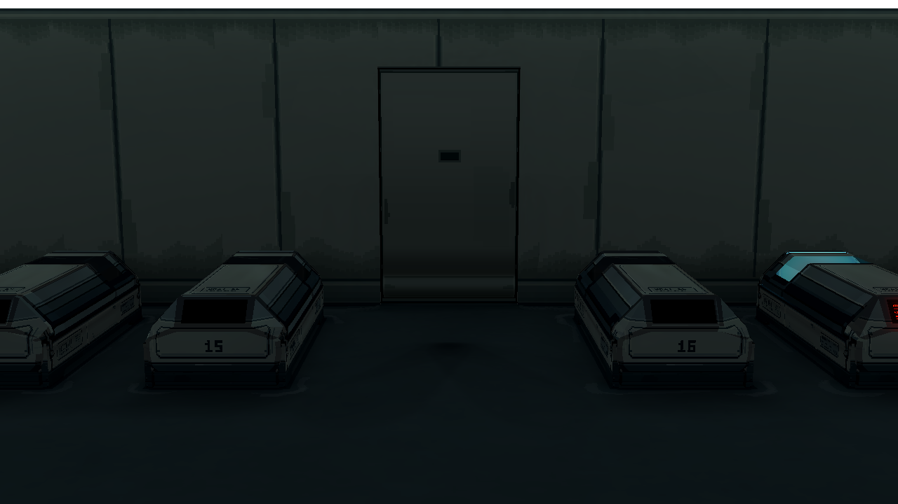
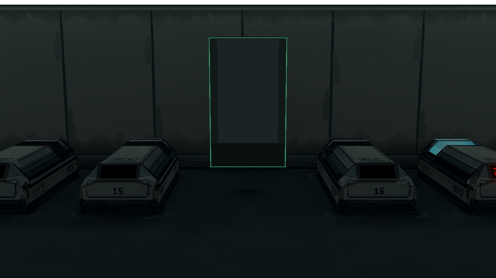

Room 1 一体化主门 v3
同一 Godot 镜头和 1280 × 720 分辨率。关注门面与后墙的关系，以及小窗与门洞内侧细灯。当前为审查样本。
门缝与门底：修改前后

修改前：黑色轮廓偏重，底部横向亮带像贴上去的墙裙 修改后：灯槽待机隐藏，门底保持连续门叶，旧化顺密封边下沉
修改后：灯槽待机隐藏，门底保持连续门叶，旧化顺密封边下沉
认证与通行
 获准：小窗与门洞四边绿灯，门侧滑
获准：小窗与门洞四边绿灯，门侧滑
通行中：四边仍为绿色；门外是临时压暗的走廊灰模拒绝：只在小窗红色，门框无红光
截图来自实际 Godot 场景，不是 Blender 渲染或像素贴图单独预览。